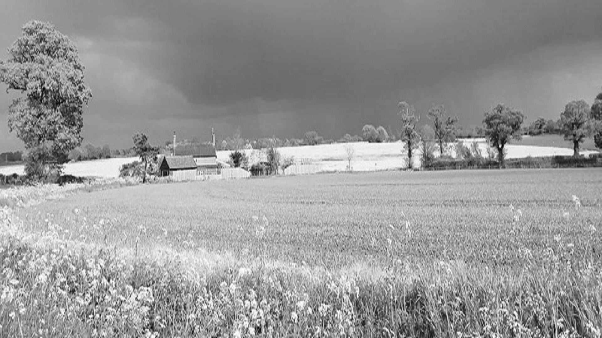
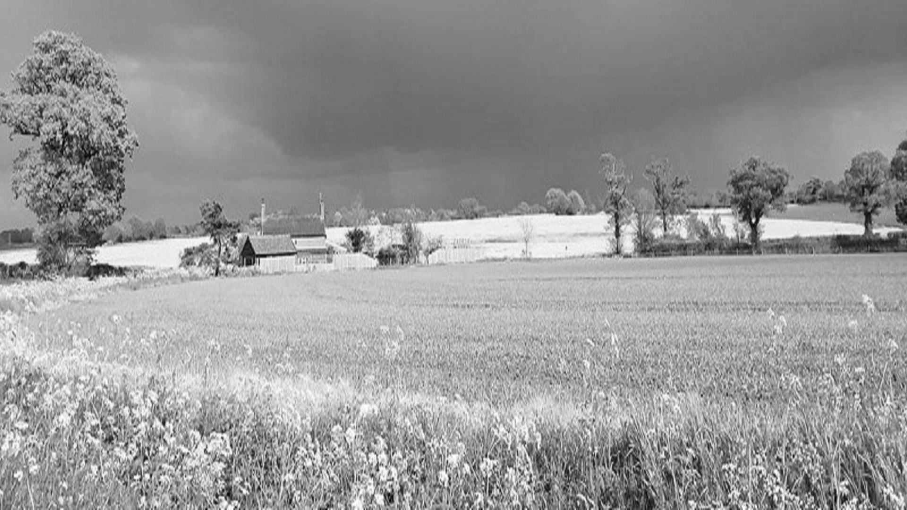

About Ilketshall St Margaret
visit WikipediaIlketshall St Margaret is a village and civil parish in the north of the English county of Suffolk. It is 3 miles (4.8 km) south of the market town of Bungay in the East Suffok district. The parish is part of the area known as the Saints and had a population of 160 at the 2011 United Kingdom census.
The parish is sparsely populated and situated to the west of the A144 road between Bungay and Halesworth. It borders the parishes of Bungay, Ilketshall St John, Ilketshall St Lawrence, Spexhall, Rumburgh, St Michael South Elmham, St Peter South Elmham and Flixton.
The parish church is dedicated to St Margaret. It dates from the early 11th century and features a round tower, one of around 40 round-tower churches in Suffolk.